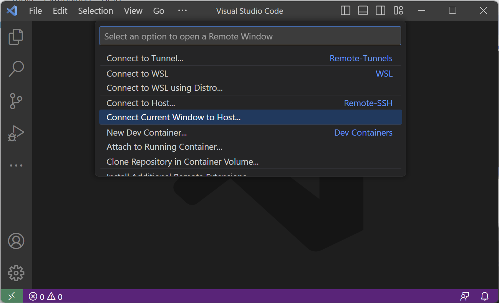
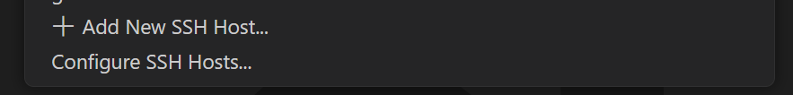
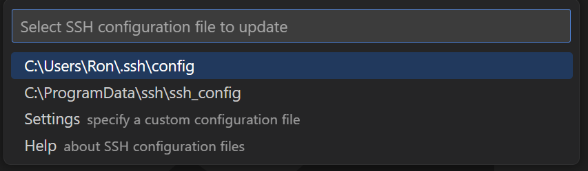

Google Docs Version of Tutorial
This may mean that your ssh-agent was configured incorrectly. Use the following commands inside your terminal to determine any errors and report back to the PSTAT Research Computing User Group for further assistance.
Agent pid ...:eval $(ssh-agent)
Identity added: ...:ssh-add $HOME/.ssh/ed25519
ed25519 was added to your keyring. This will return something like 256 SHA256: ... user@host (ED25519):ssh-add -l
user and hostname are the respective values for the server you are trying to connect to (e.g. for Alta it would be NETID@alta.pstat.ucsb.edu) which should return nothing.ssh user@hostname exit
IdentityFile section to your ssh config as follows by first "Connecting Current Window to Host":


IdentityFile which will be the name of the private key (ed25519). An example of your final configuration for Alta should look similar to this:Host alta
HostName alta.pstat.ucsb.edu
User YOUR_NETID_HERE
IdentityFile ed25519